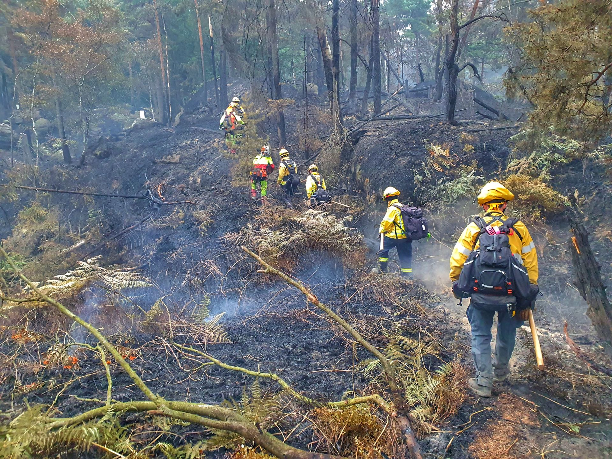

Understanding Fire Disasters

Fire is one of the most dangerous emergencies that
can occur in homes, workplaces, forests and other
environments. Fires can spread rapidly and cause
significant damage to people, property and the
surrounding environment.
Fires can be caused by several factors, including
electrical faults, gas leaks, cooking accidents,
careless handling of flammable materials and
natural events such as lightning.
Quick action, proper planning and awareness can
significantly reduce the risks associated with
fire emergencies. Knowing how to respond and where
to evacuate can help protect lives.
Emergency Response
Firefighters and emergency services play an
important role in controlling fires and protecting
communities. Their response may involve evacuation,
firefighting, rescue operations and providing
emergency medical assistance.
People should remain calm during a fire emergency
and follow instructions from emergency personnel.
Evacuation routes should be used whenever leaving
a building is necessary.
After a fire, affected communities may require
temporary shelter, food, water, medical assistance
and support while recovery begins.
Fire Prevention
Fire prevention starts with awareness and responsible
use of electrical equipment, cooking appliances and
other sources of heat.
Regularly checking electrical connections, keeping
flammable materials away from heat sources and having
working smoke alarms can help reduce fire risks.